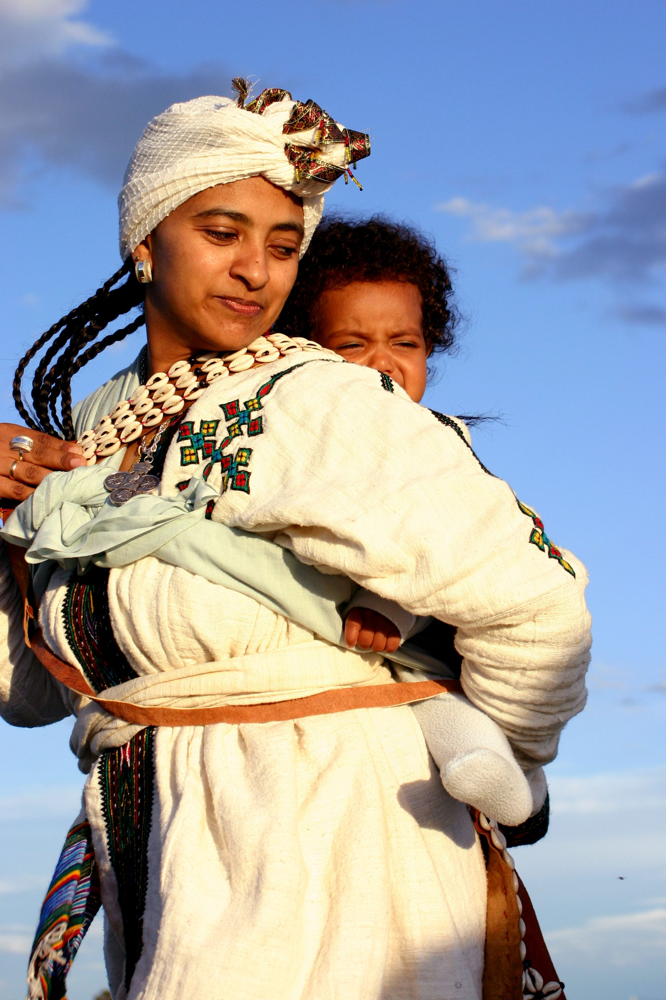

WELCOME!
We believe in sharing what we have!
-

"Ankelba" derives from the Amharic language, where it signifies an Ethiopian traditional leather product that employed for carrying infants and toddlers by Ethiopian mothers. We have chosen this name as it aptly aligns with the core principles of our project, which is rooted in the notion of resource sharing. Many individuals possess a strong desire to assist others, but lack financial means. However, they do possess valuable knowledge, energy, and free time. Our project is dedicated to harnessing these capabilities and channeling them towards meaningful pursuits. Ankelba serves as a platform where individuals willingly shoulder the burdens of others by leveraging their own skills and resources. It exemplifies our project's mission and encapsulates the essence of why we named it "Ankelba."